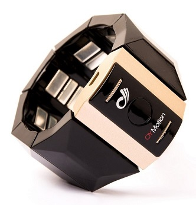

gForce 100 Armband User Guide
July 6th, 2017
Overview
gForce 100 Armband is a smart wearable Human Interface Device for gesture recognition. It recognizes gestures according to the sEMG signals of human forearms, and as well as calculates orientation data in quaternions or Euler Angles from its built-in 9-axis IMU.
Comparing with the other gesture recognition devices that are based on the computer vision technology, gForce Armband has the advantage of no dependency of embient light, no strictness with angle, much lower energy and much lower cost.

Turning on/off
-
Turn on
When gForce 100 Armband is off, its green LED light will be off. To turn it on, simply press the button in the middle of its main block.
When gForce 100 Armband starts to power on, it will vibrate for about 0.5 second. Once it is successfully powered up, the green LED light flashes at a frequency of 4HZ with 2 seconds on and 2 seconds off.
Make sure the armband has sufficient power, otherwise re-charge it with a micro USB line.
-
Turn off
When gForce 100 Armband is on, pressing and holding the button for about 5 seconds and then releasing will turn it off. The green LED being off indicates the device has been turned off successfully.
Note:
If gForce 100 Armband is not in use, please turn it off. Right now the auto-low-power mode is not implemented yet.
Re-charging
gForce 100 Armband is equipped with Li-ion battery (200mAh). The USB port on the main block is used for battery re-charging.
During re-charging, the red light LED on the main block is on. Re-charging will maximally take 2 hours, and after re-charging completes, the red light LED is turned off.
Note:
gForce 100 Armband is NOT designed to work during re-charging, as this brings in electrical noise which contaminates the weak EMG biometric signals.
Other Status Indication
-
After successfully connecting with a BLE central device (e.g. gForceJoint, gForceDongle or any other BLE central device), the green LED light flashes at 5HZ when any data (e.g. quaternion, gesture or raw data) switch is on. If the user turns all data switches off through gForceApp, the green LED light will be always on.
-
The device will vibrate for about 100ms when a gesture is recognized.
Instructions to Wearing and Performing Gestures
To make sure gForce armband can recognize your gestures, please refer to Guide to Performing Gestures and spend several minutes learning and training yourself. The recognition rate can reach 95% and even higher after you get familiar with performing the gestures properly.
Predefined Gestures
The six predefined gestures are: Fist Spread Fingers Wave In Wave Out Pinch Shoot
Note:
When both your arm and hand are at a rest state, it will be recognized as a 'Relax' gesture.